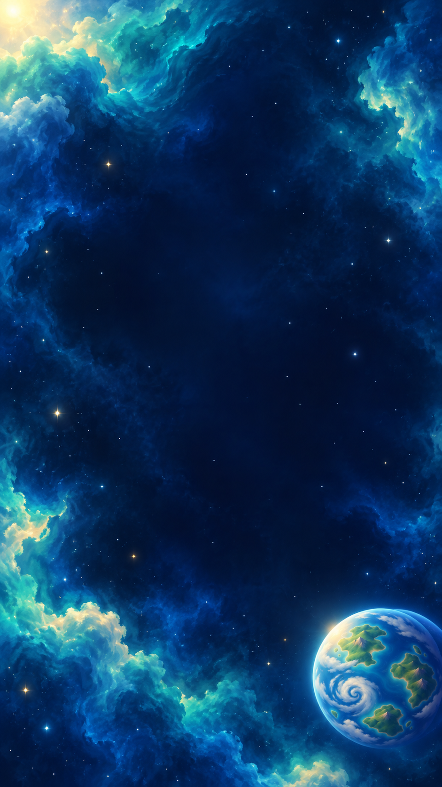
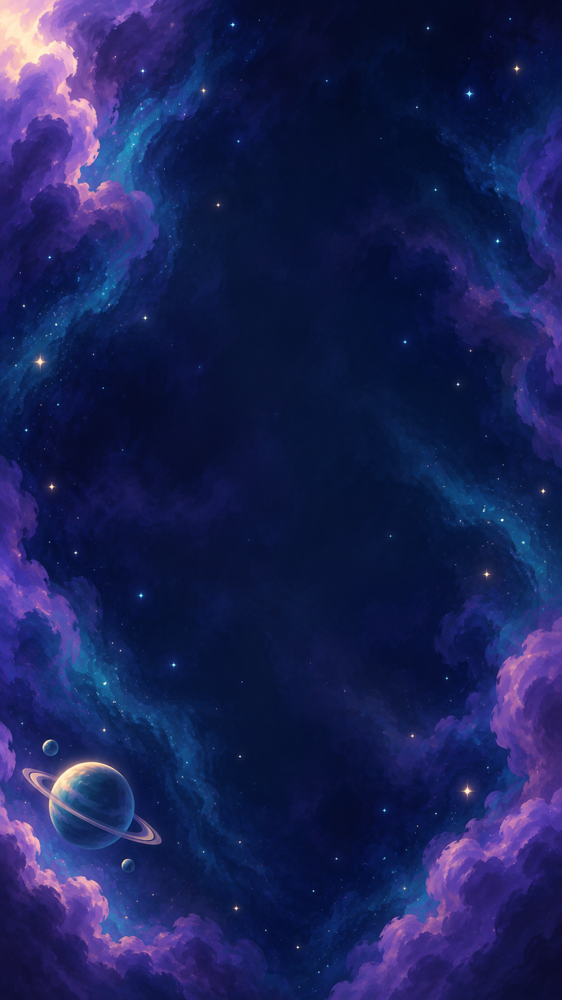
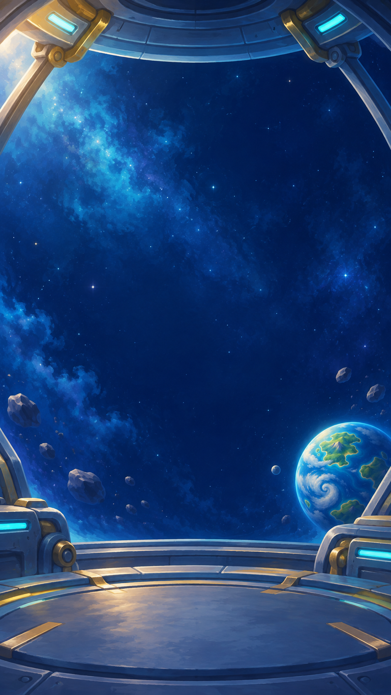

Фоны, иконки и кнопки в стиле Azurea
Мягкая рисованная светотень, насыщенные цвета, крупные формы. Создано встроенным image_gen по референсу планеты Azurea.

Главный экран
Задания и события
Ангар и магазин12 иконок
Планета, дрон, кейс, кристалл; магазин, задания, достижения, престиж; настройки, энергия, магнит, звук.

4 кнопки, по 2 состояния
Синяя, зелёная, золотая и красная. Слева обычное состояние, справа нажатое. Текст добавляется интерфейсом.

Новые PNG сохранены отдельно; в приложение пока не подключены. Иконки и кнопки находятся на общих листах, перед подключением нужна нарезка.
Полные запросы генерации